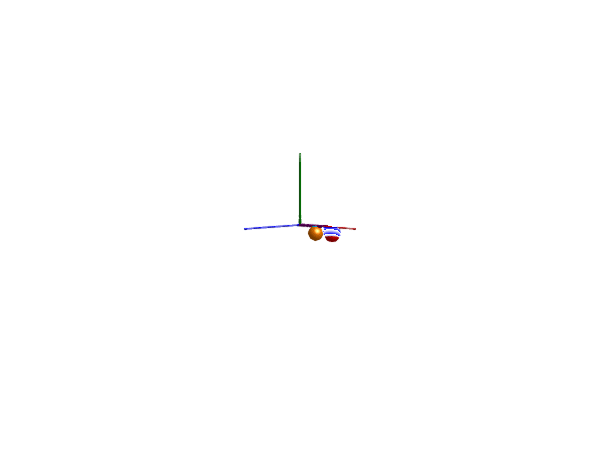

Spring-mass system

This example mirrors that of the modelica spring-mass system and demonstrates that we can model a spring-mass system in two different ways.
- Using a prismatic joint and a 1-dimensional spring from the
Translationalsubmodule attached to the joint. The advantage of this approach is that the many elements from the Translational library can be easily used here and that this implementation is usually more efficient compared to when using 3-dimensional springs. - Using a 3-dimensional spring from the
Multibodylibrary.

using Multibody
using ModelingToolkit
using Plots
using JuliaSimCompiler
using ModelingToolkitStandardLibrary.Mechanical.TranslationalModelica
using OrdinaryDiffEq
t = Multibody.t
D = Differential(t)
world = Multibody.world
systems = @named begin
p1 = Prismatic(n = [0, -1, 0], s0 = 0.1, useAxisFlange = true)
spring1 = TranslationalModelica.Spring(c=30, s_rel0 = 0.1)
spring2 = Multibody.Spring(c = 30, s_unstretched = 0.1)
body1 = Body(m = 1, r_cm = [0, 0, 0])
bar1 = FixedTranslation(r = [0.3, 0, 0])
bar2 = FixedTranslation(r = [0.3, 0, 0])
body2 = Body(m = 1, r_cm = [0, 0, 0])
p2 = Prismatic(n = [0, -1, 0], s0 = 0.1, useAxisFlange = true)
end
eqs = [
connect(body1.frame_a, p1.frame_b)
connect(world.frame_b, bar1.frame_a)
connect(bar1.frame_b, p1.frame_a)
connect(spring1.flange_b, p1.axis)
connect(bar1.frame_b, bar2.frame_a)
connect(bar2.frame_b, p2.frame_a)
connect(p2.frame_b, body2.frame_a)
connect(bar2.frame_b, spring2.frame_a)
connect(body2.frame_a, spring2.frame_b)
connect(spring1.flange_a, p1.support)
]
@named model = ODESystem(eqs, t, systems = [world; systems])
ssys = structural_simplify(IRSystem(model))
prob = ODEProblem(ssys,[
D(p1.s) => 0,
D(D(p1.s)) => 0,
D(p2.s) => 0,
D(D(p2.s)) => 0,
], (0, 10))
sol = solve(prob, Rodas4())
@assert SciMLBase.successful_retcode(sol)
Plots.plot(sol, idxs = [body1.r_0[2], body2.r_0[2]])The plot indicates that the two systems behave identically.
3D animation
Multibody.jl supports automatic 3D rendering of mechanisms, we use this feature to illustrate the result of the simulation below:
import CairoMakie
Multibody.render(model, sol; z = -5, filename = "springmass.gif")